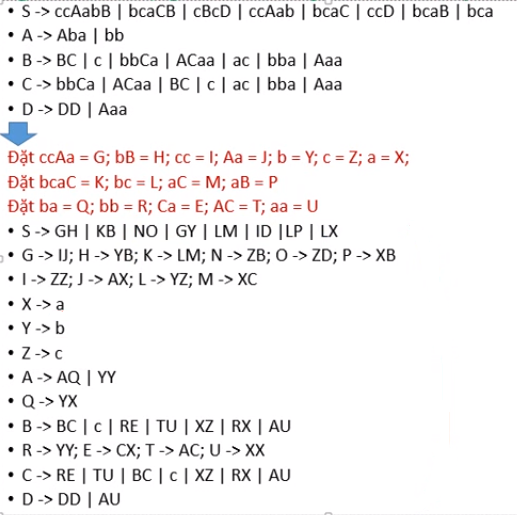

Về trang chủ
Tìm hiểu cách thức chuẩn hóa văn phạm phi ngữ cảnh
I. So sánh giữa ngôn ngữ chính quy và ngôn ngữ phi ngữ cảnh
1. Ngôn ngữ chính quy:
- Được sinh ra từ văn phạm chính quy:
+ Văn phạm chính quy có các quy tắc sinh: A -> ab hoặc A -> a, tức là vế trái chỉ có 1 biến duy nhất còn vế phải chứa các kí hiệu kết thúc
VD: S -> abS | a
- Được chấp nhận bởi atomat hữu hạn
2. Ngôn ngữ phi ngữ cảnh:
- Được sinh ra từ 1 văn phạm phi ngữ cảnh (văn phạm phi ngữ cảnh có các quy tắt sinh: A -> B, với A chỉ chứa 1 biến duy nhất, còn B thì có thể chứa tùy ý mọi biến
và kí hiệu kết thúc)
- VD:
. S -> aAabBCDa
. A -> BCD
. B -> aabc
- Được chấp nhận bởi atomat đẩy xuống
II. Cách nhận biết 1 từ có thuộc về 1 ngôn ngữ phi ngữ cảnh nào đó hay không
1 từ bất kì ví dụ: bbabaa
^
|
Thuộc về 1 ngôn ngữ phi ngữ cảnh
^
|
Được sinh ra từ 1 văn phạm phi ngữ cảnh?
^
|
Sử dụng Thuật toán CYK để kiểm tra văn phạm phi ngữ cảnh đó có sinh ra bbabaa hay không ?
III. Điều kiện để sử dụng thuật toán CYK
- Văn phạm phi ngữ cảnh cho trước đó là 1 văn phạm phi ngữ cảnh ở dạng chuẩn Chomsky - CNF (Chomsky Normal Form)
- Thế nào là 1 văn phạm đã ở dạng chuẩn Chomesky - CNF
+ Văn phạm phi ngữ cảnh ở dạng chuẩn Chomsky - CNF: A -> BC | A -> a
+ Văn phạm phi ngữ cảnh: A -> B
+ Văn phạm chính quy: A -> aB hoặc A -> a
- VD:
S -> AB | BX | BY
Y -> AB
A -> BA | a
B -> XX | XY | XX | b
V -> a
=> Mục tiêu: Biến đổi 1 văn phạm phi ngữ cảnh cho trước về 1 văn phạm phi ngữ cảnh ở dạng chuẩn Chomsky - CNF, để có được phép sử dụng thuật toán CYK (Chuẩn hóa văn phạm phi ngữ cảnh)
IV. Các bước chuẩn hóa 1 văn phạm phi ngữ cảnh
- Loại bỏ các quy tắt sinh vô nghĩa
- Loại bỏ các quy tắt sinh ε
- Loại bỏ các quy tắt sinh đơn
- Chỉnh các quy tắt sao cho vế phải có độ dài bằng 2
- Ví dụ: Biến đổi văn phạm phi ngữ cảnh sau về dang chuẩn Chomsky - CNF
. S -> ccAabB | bcaCB | cBcD
. A -> Aba | bb
. B -> BC | c | ε
. C -> bbCa | ACaa | B | ac
. D -> DD | Aaa
. E -> cB | b | ε
+ Bước 1: Loại bỏ các quy tắt sinh vô nghĩa
E -> CB | b | ε ( vô nghĩa)
Vì vậy ta còn lại các quy tắt sinh sau:
. S -> ccAabB | bcaCB | cBcD
. A -> Aba | bb
. B -> BC | c | ε
. C -> bbCa | ACaa | B | ac
. D -> DD | Aaa
+ Bước 2: Loại bỏ các quy tắt sinh ε
Kết quả như sau:
. S -> ccAabB | bcaCB | cBcD | ccAab | bcaC | ccD | bcaB | bca
. A -> Aba | bb
. B -> BC | c | C
. C -> bbCa | ACaa | B | ac | bba | Aaa
. D -> DD | Aaa
+ Bước 3: Loại bỏ các quy tắt sinh đơn:
. S -> ccAabB | bcaCB | cBcD | ccAab | bcaC | ccD | bcaB | bca
. A -> Aba | bb
. B -> BC | c | bbCa | ACaa | ac | bba | Aaa
. C -> bbCa | Acaa | BC | c | ac | bba | Aaa
. D -> DD | Aaa
+ Bước 4: Chỉnh các quy tắt sao cho vế phải có độ dài bằng 2 (Văn phạm phi ngữ cảnh đã ở dạng chuẩn Chomsky - CNF (A -> BC | A -> a))

V. Áp dụng thuật toán CYK để kiểm tra 1 từ bất kì có được sinh ra từ 1 văn phạm phi ngữ cảnh cho trước hay không ?
1. Bước 1: Chuyển văn phạm phi ngữ cảnh về văn phạm phi ngữ cảnh ở dạng chuẩn Chomsky - CNF
2. Bước 2: Áp dụng thuật toán CYK lên văn phạm phi ngữ cảnh dạng chuẩn Chomsky vừa biến đổi